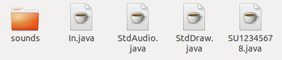
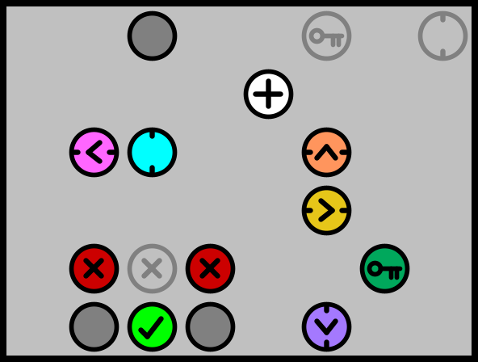

Marks
CS113/RW113 Marks First Submission
CS114/RW114 Marks First Submission
Student To Demi Allocation For Final Demo
Use the below links to check which demi you have been assigned to for your final demo.
Please book a demo slot with this demi.
This can be done by looking under the project section on sunLearn and clicking on your allocated demi's name. Choose a free slot and book it. Please do NOT book multiple slots and do NOT book a slot with a demi you were not assigned to.
If you student number is not in these lists, please contact me at 19478275@sun.ac.za
Introduction
Traversal is a game with a simple objective: navigate your player safely across the board onto the green target without touching any of the "dangerous" pieces.
Please make time to read this page carefully, and to follow the instructions exactly. If you fail to comply with some instruction here, you will be penalized.
The rules of the game
Traversal is played on a rectangular board divided into squares. Some of the squares are empty, while others contain "active" pieces.
 |
Empty square |
| Wall, never moves | |
 |
Player, moved by the user (keys on the keyboard) |
 |
Target, never moves |
If the player is at the left (or right) edge of the board, moving left (or right) off the board has no effect. In other words, the player cannot move beyond the left and right edge of the board. On the other hand, if the player is at the top (or bottom) edge of the board, moving up (or down) makes the player appear at the other edge. In other words, the player can wrap around the board from the top to the bottom and vice versa.
Movers
Movers are active pieces that move around when the player moves. Horizontal movers move one position every time the player makes a horizontal move (either left or right); vertical movers move one position every time the player makes a vertical move (either up or down). There are four kinds of horizontal movers, and four corresponding kinds of vertical movers.
 |
 |
Horizontal and vertical down movers |
 |
Horizontal and vertical up movers | |
 |
 |
Horizontal and vertical left movers |
| Horizontal and vertical right movers |
Like the player, movers can "wrap-around" the board out the top and in the bottom, and vice versa. Unlike the player, movers can also wrap-around from left to right and vice versa. Movers can move over any other non-empty pieces (including other movers) without affecting them. This includes the target. If the player moves onto the target while there is also a mover on the target, the player still wins the game.
Switchers
Switchers are active pieces that are either on or off. When they are on, the player is not allowed to move onto them; "touching" them will end the round. When they are off, the player can move over switchers. Switchers toggle between the on/off states based whenever the player moves. Horizontal switchers toggle every time the player makes a horizontal move (either left or right); vertical switchers toggle every time the player makes a vertical move (either up or down).
 |
 |
Horizontal and vertical switchers in on state |
 |
 |
Horizontal and vertical switchers in off state |
Keys and ports
Ports are active pieces that are either open or closed. Keys are also active pieces. At the start of a round, all keys are "available": when the player moves over a key, it toggles all of the ports on the board between their open/closed states. In other words, all ports that are open, change to closed; all ports that are closed, change to open. Once a key has toggled the ports, the key becomes unavailable and can never toggle the ports again. The player is not allowed to move onto closed ports; "touching" them will end the round. The player can move onto open ports.
| Closed port | |
 |
Open port |
 |
Available key |
| Unavailable key |
Walls
Walls remain stationary, "touching" them will end the round.Requirements
The project will be submitted in two parts. The first hand in will require your program to implement only some of Traversal's full functionality, the second hand in will require a full implementation.
Traversal operates in two different ways. The game has a text mode as well as a graphics mode. For the first demo, the project requirements will focus on text mode. For the second demo, the project must implement both the text AND graphics modes.
First Project Submission: 4th May
The first project submission will open at midnight on the 27th of April and will close at midnight on the 4th of May- 1.1 Your program MUST implement the rules of the game.
- 1.2 Your program MUST take in two command-line arguments and operate in text mode.
- 1.3 Your program MUST interpret the first command-line argument as the name of the "board" file.
- 1.4 Your program MUST interpret the second command-line argument as the name of the "moves" file.
- 1.5 Your program MUST read the "board" file based on the format described below.
- 1.6 Your program MUST read the "moves" file based on the format described below.
- 1.7 Your program MUST print all relevant output to the command-line, the output must be in the format described below.
-
1.8 Your program MUST implement the following pieces and their functionality
- player
- target
- empty spaces
- walls
- movers
- 1.9 Your program MUST execute the moves in the "moves" file one-by-one onto the starting board described in the "board" file.
- 1.10 If the next move is legal, your program MUST update the board accordingly.
-
1.11 If the next move is not legal, your program MUST
output "
Incorrect move", display the current board according to the format described below, and terminate. Your program MUST NOT display anything else. - 1.12 If the next move is a "quit" move, your program MUST display the current board according to the format described below, and terminate. Your program MUST NOT display anything else.
-
1.13 If when executing a move, the player touches an obstacle,
your program MUST
output "
You lost!", display the current board according to the format described below, and terminate. Your program MUST NOT display anything else. -
1.14 If when executing a move, the player reaches the target,
your program MUST
output "
You won!", display the current board according to the format described below, and terminate. Your program MUST NOT display anything else. - 1.15 If all the moves have been executed and the end of the "moves" file is reached, your program MUST display the current board according to the format described below, and terminate. Your program MUST NOT display anything else.
Final Project Submission: date 01 June
The final project submission will open at midnight on the [TBA] and will close at midnight on the [TBA]- 2.1 Your program MUST be able to operate in both text AND graphics mode.
- 2.2 When one command-line argument is given, your program MUST operate in graphics mode.
- 2.3 When two command-line arguments are given, your program MUST operate in text mode.
- 2.4 In graphics mode, your program MUST interpret the first (and only) command-line argument as the name of the "board" file.
-
2.5 Your program MUST implement the following pieces and their functionality
- player
- target
- empty spaces
- walls
- movers
- switchers
- keys
- ports
- 2.6 Your program MUST read the "board" file based on the format described below.
- 2.7 After reading the board, your program MUST display a graphical representation on the screen.
-
2.8 Your program MUST read moves from the keyboard.
-
2.8.1 If the user types a single "
h" keystroke (without pressing enter), your program MUST move the player one position left (if possible) and react accordingly. -
2.8.2 If the user types a single "
l" keystroke (without pressing enter), your program MUST move the player one position right (if possible) and react accordingly. -
2.8.3 If the user types a single "
j" keystroke (without pressing enter), your program MUST move the player one position down (if possible) and react accordingly. -
2.8.4 If the user types a single "
k" keystroke (without pressing enter), your program MUST move the player one position up (if possible) and react accordingly. -
2.8.5 If the user types a single "
q" keystroke (without pressing enter), your program MUST terminate. Your program MUST NOT display anything else. - 2.8.6 If the user types anything else, your program MUST ignore it completely.
-
2.8.1 If the user types a single "
- 2.9 After making a move, your program MUST update the graphical display of the board.
-
2.10 If when executing a move, the player touches an obstacle,
your program MUST
output "
You lost!" to the command line, and terminate. Your program MUST NOT display anything else. -
2.11 If when executing a move, the player reaches the target,
your program MUST
output "
You won!" to the command line, and terminate. Your program MUST NOT display anything else.
File and output formats
This section describes the format of board files, moves files, and the text output of the board. Your program must follow these formats precisely: the tests will use the formats and if your program does not implement them, it will fail the tests.
Board file format
- The first line of the file is a string. This is the title of board. Your program must read this line, but it may ignore it further.
- The second line of the file describes the first of the board. It contains two integers, R and C, separated by a single space. The board will contain R rows and C columns. It is given that 3 ≤ R ≤ 15 and 3 ≤ C ≤ 15. Both integers start with a non-zero digit. The line contains nothing else.
-
The next R lines contains exactly C characters each.
Each character denotes the contain of one cell of the board.
-
A "
." character denotes an empty cell. -
A "
s" (lowercase) or "S" (uppercase) character denotes the starting position of the player. Each file will contain a single "s"/"S" character. -
A "
t" (lowercase) or "T" (uppercase) character denotes the position of the target. Each file will contain a single "t"/"T" character. -
A "
x" (lowercase) or "X" (uppercase) character denotes a wall. -
A "
u" (lowercase) character denotes a horizontal mover that moves up. -
A "
d" (lowercase) character denotes a horizontal mover that moves down. -
A "
l" (lowercase) character denotes a horizontal mover that moves left. -
A "
r" (lowercase) character denotes a horizontal mover that moves right. -
A "
U" (uppercase) character denotes a vertical mover that moves up. -
A "
D" (uppercase) character denotes a vertical mover that moves down. -
A "
L" (uppercase) character denotes a vertical mover that moves left. -
A "
R" (uppercase) character denotes a vertical mover that moves right. -
A "
h" (lowercase) character denotes a closed horizontal switch. -
A "
H" (uppercase) character denotes an open horizontal switch. -
A "
v" (lowercase) character denotes a closed vertical switch. -
A "
V" (uppercase) character denotes an open vertical switch. -
A "
k" (lowercase) or "K" (uppercase) character denotes a key. -
A "
p" (lowercase) character denotes a closed port. -
A "
P" (uppercase) character denotes an open port.
-
A "
- The file does not contain anything else.
Here is an example of a board file:
First moves 3 10 .U...UxU.. sUDxDUxUDt ..DxD...D.
Moves file format
- The file contains a single line.
- The line contains a sequence of five action characters but may also contain "illegal" characters.
-
The "
h" (lowercase) character denotes a left move. -
The "
l" (lowercase) character denotes a right move. -
The "
j" (lowercase) character denotes a down move. -
The "
k" (lowercase) character denotes an up move. -
The "
x" (lowercase) character denotes the quit command. - The file does not contain anything else.
Here is an example of a moves file:
kjkjlljjlljlkkllkll
Command-line output format
- The output is similar but not identical to the board file.
-
The output either starts with the first line of the board, or, if a message
must be printed according to the requirements (either
"
Incorrect move", "You lost!", or "You won!". - The output contains one line for each row of the board. The rows appear in the same order as in the board file.
-
Each line contains one character for each column of the board. The character
depends on the contains of the corresponding cell of the board:
-
A "
." character denotes an empty cell. -
A "
t" character denotes the target. -
An "
x" character denotes a wall. -
A "
k" character denotes a key. -
A lowercase "
p" character denotes a closed port. -
An uppercase "
P" character denotes an open port. -
A lowercase "
s" character denotes a closed switch. -
An uppercase "
S" character denotes an open switch. -
An "
m" character denotes a mover (of any kind). -
A "
Y" character denotes the player.
-
A "
-
A cell may contains several pieces. For example, a cell may contain
a wall ("
x"), a mover ("m"), and the player ("Y"). In this case, the output must contain only the last character on the list above. In this example, it will be "Y". - The output does not contain anything else.
Here is an example of the command-line output:
You lost! Yxxx...xxx ..x..x.x.t x...xx...x
Hand-in and demonstration
When you are done, create a ZIP file that contains:
- A single
.javafile with your project's code. This java file MUST be named in the format SU<student number>. Example: SU12345678 - Resource files required for your program to work such as images and/or audio files.
- Include, in your root directory, the .java files (from stdlib) that your program uses to run. This is necessary because your program is expected to compile and run as soon as it is pulled from sunLearn, no additional file additions/alterations should be necessary.
- Your zip file MUST use your student number as name. Example: 12345678.zip
- An example submission format is shown in the image below (the files must of course be zipped as described above):

How to submit your zip file:
- To submit your ZIP file, log in to learn.sun.ac.za.
- Project submissions will open on sunLearn 1 week before the due date
- The first project submission will open at midnight on the 27th of April and will close at midnight on the 4th of May
- The final project submission will open at midnight on the [TBA] and will close at midnight on the [TBA]
- You are allowed to submit multiple times. It is a good idea to submit early, even before you are done, in case anything happens to the system or to your code.
- Test your ZIP file before you submit: extract the files in a clean directory and make sure that it compiles and runs correctly.
- If you write your program on a home laptop or PC, be sure to test that your program compiles and runs correctly on the NARGA computers to prevent unwanted issues during your demo.
Object Oriented Programming (OOP) will not be allowed for this project. Your project must be written in a single java file.
Your ZIP file must NOT contain any .class files. You
will be required to compile the project during the demonstration FROM THE
COMMAND LINE. In other words, you are free to develop your project in an
IDE such as Eclipse or NetBeans, but you must be able to compile and run it
from the command-line. If you are not able to do this, don't use an IDE.
Demonstrations
There will be two submissions for the project. The first will be marked and feedback given but this submission is for formative purposes only, the final submission and demo will make up the full project mark.
First Project Handin Submission
Final Project Handin Submission/Demo
Demonstrations follow the steps below:
- Your handed-in project is downloaded from learn.sun.ac.za.
- You are asked to compile your project from the command-line.
- Your marker may run several tests on your program in text mode and/or run your program in graphics mode to check visually that it satisfies the requirements.
- Your marker will inspect your code and check that it satisfies the coding conventions.
- Your marker will ask you to explain certain parts of your code and make changes to ensure that you wrote the code yourself.
- You will be given a chance to query the allocation of marks that you received. If issues of mark allocation are not raised in the demo, the mark will not be changed thereafter.
Coding Conventions
It is important to stick to sensible coding conventions.
Be consistent. Whatever conventions you choose to use, be consistent. If you deviate from your coding conventions, you will be penalized.
Indent. Indent consistently and neatly.
Choose sensible names. Variables should be named sensibly. This does not mean that all names have to be long and descriptive: under some circumstances, short one-letter names are more appropriate that long names. Static methods must always have descriptive names.
Comment sensibly. Not everything needs to be commented to death, but there should be enough comments (in the right places) so that someone else can read and understand your code.
Other Resources
- How to read files and keys:
Keys.java - Sample test files for the first project submission:
samples1.zip - Sample test files for the final project submission:
samples2.zip - Images for graphics mode of the final project submission:
images.zip - A modified version of the stdlib library provided by the course textbook (Introduction to Programming in Java by Robert Sedgewick and Kevin Wayne)
can be downloaded here:
stdlib.zip. This modified version must be used for the project.To use the sample board, move, and output files, download and unzip the sample files given above. For each of the sample files, run your program in text mode and compare its output to the corresponding output file. An example of this is shown below, be sure to replace SU12345678 with SU<your-student-number>.
$ java SU12345678 samples1/board_01.txt samples1/moves_01.txt | diff -s - samples1/output_01.txt Files - and s1amples1/output_01.txt are identical $ java SU12345678 samples1/board_01.txt samples1/moves_01.txt | diff -s - samples1/output_02.txt 1,8c1,4 < You won! < ....... < ....... < ....x.. < ....x.. < ....x.. < ...xx.. < ....x.Y --- > Incorrect move > ... > Y.t > ...
You can check several of the files at the same time. An example of this is shown below, be sure to replace SU12345678 with SU<your-student-number>.
$ for k in 01 02 03 04 05 06 ; do java SU12345678 samples1/board_$k.txt samples1/moves_$k.txt | diff -s - samples1/output_$k.txt ; done Files - and samples1/output_01.txt are identical Files - and samples1/output_02.txt are identical Files - and samples1/output_03.txt are identical Files - and samples1/output_04.txt are identical Files - and samples1/output_05.txt are identical Files - and samples1/output_06.txt are identical
You can check all of the files at the same time using the following shell script
test.sh. An example of this is shown below, be sure to replace <your-student-number> WITHIN the test.sh script with your actual student number, also change samples1/ to samples2/ when testing for demo2.$ ./test.sh Files - and samples1/output_01.txt are identical Files - and samples1/output_02.txt are identical Files - and samples1/output_03.txt are identical Files - and samples1/output_04.txt are identical Files - and samples1/output_05.txt are identical Files - and samples1/output_06.txt are identical ...
- Example boards:
Simple Board

Medium Board

Difficult Board
